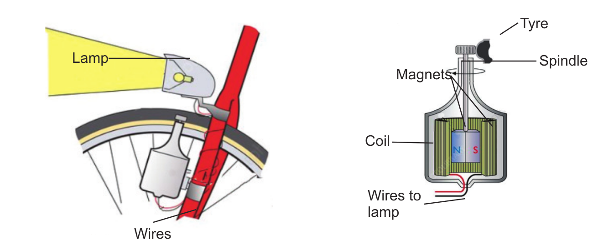

. (a) In which direction of the Earth does the N pole of the magnet point? (b) In which direction of the Earth does the South pole of the magnet point? 3. Push one pole of the magnet to make it rotate. Wait until it settles again. In which direction do the N pole and S pole point?
Results: Write the results of the experiment you have conducted.
Conclusion: Write the conclusion of the experiment you have conducted.
Electricity generation
The magnet is used in generating electricity. For example, it is used in a bicycle dynamo. A bicycle dynamo has a magnet that is surrounded by a coil. Observe Figure 12. When the bicycle wheel rotates, it causes the magnet to rotate. Rotation of the magnet generates electricity in the coil. That electricity is then transmitted through a wire to the bulb, causing it to light up. When the wheels rotate faster, the electric current produced increases and the light from the lamp brightens. When the bicycle wheels rotate slowly, the electric current decreases and the light from the lamp becomes dim.

Separation of objects
Experiment 5: Investigating separation of materials made up of iron using a magnet
Aim: Using a magnet to separate materials made of iron
Materials: Soil, a bar magnet, iron filings and a cardboard